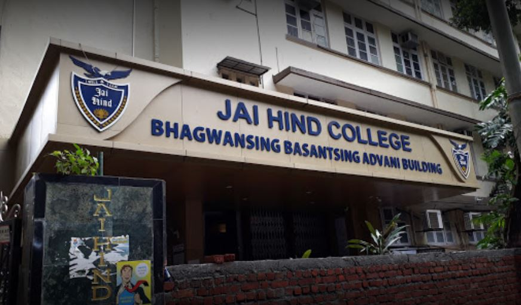

Jai Hind College
Jai Hind has gone on to become one of the premier educational institutions of Mumbai. However, the Managing Board and the Faculty do not believe in being complacent with the place they have carved in the field of education. Their endeavor is to move beyond the conventional academic programmes so as to keep pace with the changing academic scenario. With this in mind, several new programmes have been introduced, that have been extremely well received by students and prospective employers alike. The Placement Cell has been very active in drawing leading business organizations to the college, resulting in a large number of students being inducted into these organizations. The objective of the institution is to continue to expand while imparting useful and meaningful education, so that the students will emerge as good citizens of India.
The motto of the college, I will and I can, encourages and inspires the students to break the pre - conceived boundaries of performance. It encourages them to dream, and to use the latest innovative ideas and technology to realize those dreams. Jai Hind students truly believe that nothing is impossible, and that the sky is the limit for them.

Jai Hind College History
Jai Hind College was established in 1948 by a small band of dedicated teachers of the D.J Sind College Karachi. A tragic world event, the partition of India, had driven them from their homes, their friends, and their work place. They came to Bombay, and persevered in the face of all odds to achieve their goal of setting up an educational institution to which they could contribute their expertise, their knowledge, and their skills. But it served another purpose as well, for it enabled them to retrieve their own self respect which circumstances had so badly bruised. Thus Jai Hind College was born.
Jai Hind College was not always big. It was very small indeed when it was born, in the wake of the Partition of India, in August 1947. The men who played a major role in its creation were professors of D.J. Sind College, Karachi, assisted by a few other educationists, who came together under the banner of the Sind Educationists' Association headed by the founder Principal, Prof T. M. Advani.